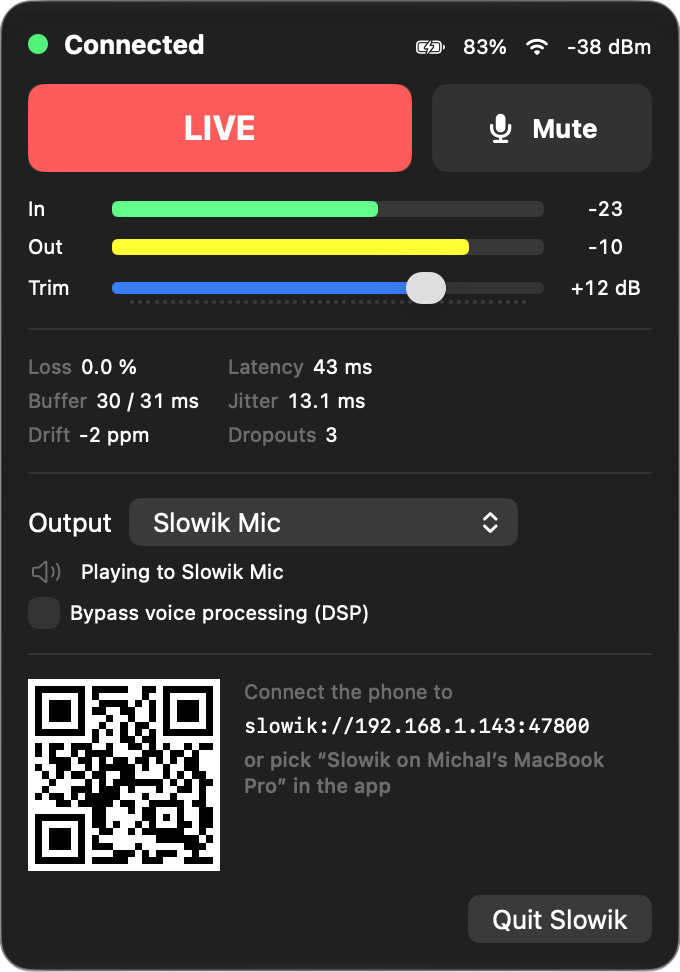
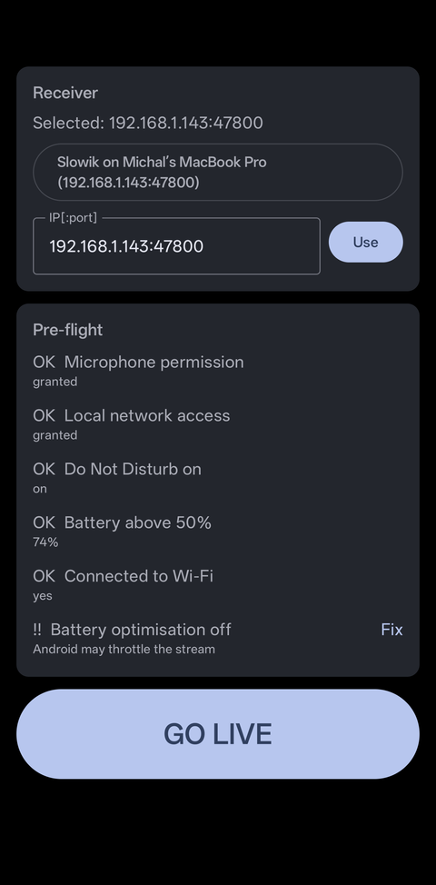
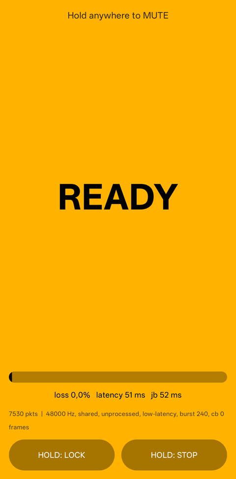
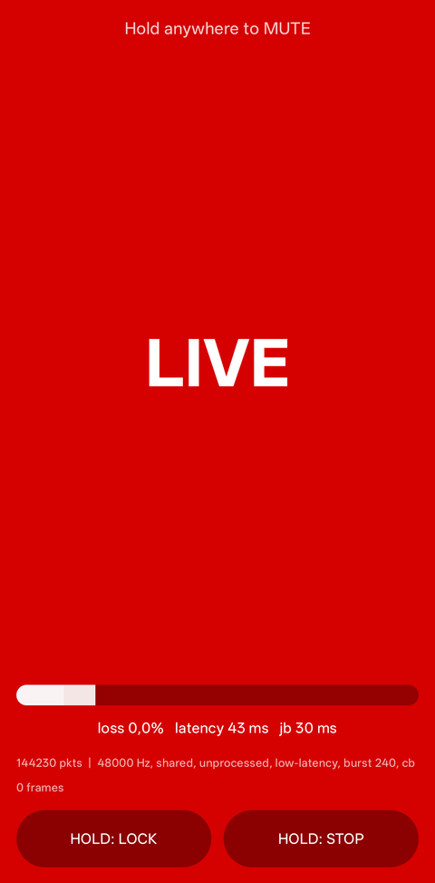

Mac · operator panelLIVE tally, meters, loss, latency, drift, QR pairing

Pick the MacFound automatically, plus a pre-flight checklist

READYStreaming, waiting for the operator

LIVEThe Mac put you on air
MUTEDHold anywhere. No accidental taps